Nyzo version 568 (commit on GitHub) adds the CoinsInCirculationCommand to the client.
This version affects the client only.
In LockedAccountManager, the new accountIsLocked() method allows direct querying of whether an account is subject to locking. Previously, only transactions could be queried, using the isSubjectToLock() method.
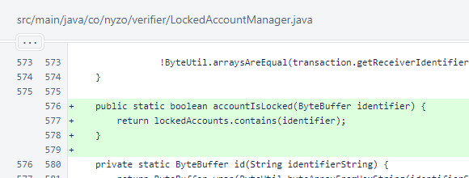In the Client initialization process, the new CommandManager.checkCommandStrings() method is called. This method does nothing more than print messages if duplicate command strings are used among multiple commands.
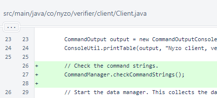In CommandEndpointApi.getResponse(), use of the ExecutionResult.toJson() method has been replaced with the new ExecutionResult.toEndpointResponse() method. This allows ExecutionResult objects to return types other than JSON.
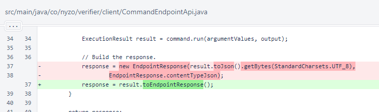In CommandEndpointWeb.getResponse(), presentation and processing of the form is now bypassed for commands with no arguments.
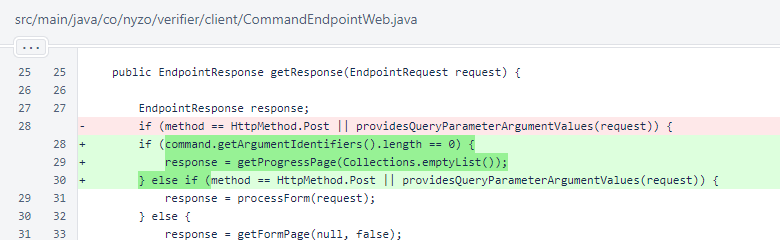In CommandManager, the new CoinsInCirculationCommand was added to the list of commands. The checkCommandStrings() method, as noted above, prints messages when duplicate command names are found. This method is intended to prevent developers from inadvertently adding a new command whose command strings collide with those of an existing command.
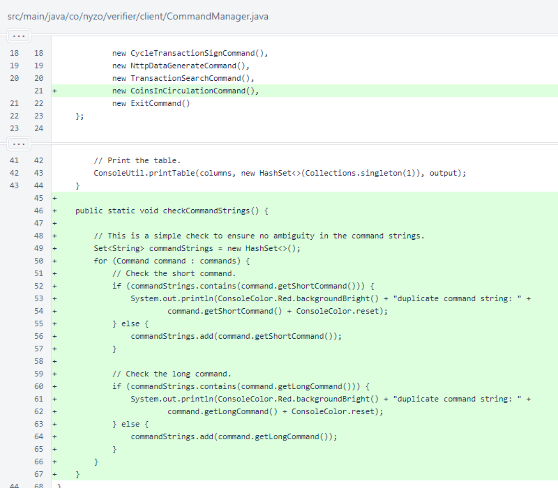In the ExecutionResult interface, the toJson() method was replaced with toEndpointResponse(). This allows an ExecutionResult to return API responses of any type, including binary and plain text.
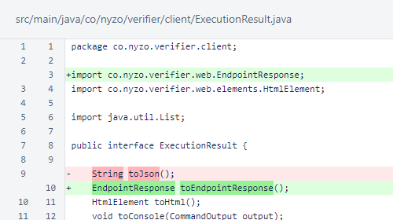In SimpleExecutionResult, implementation of toJson() was modified to become toEndpointResponse() to satisfy the new requirement of ExecutionResult.
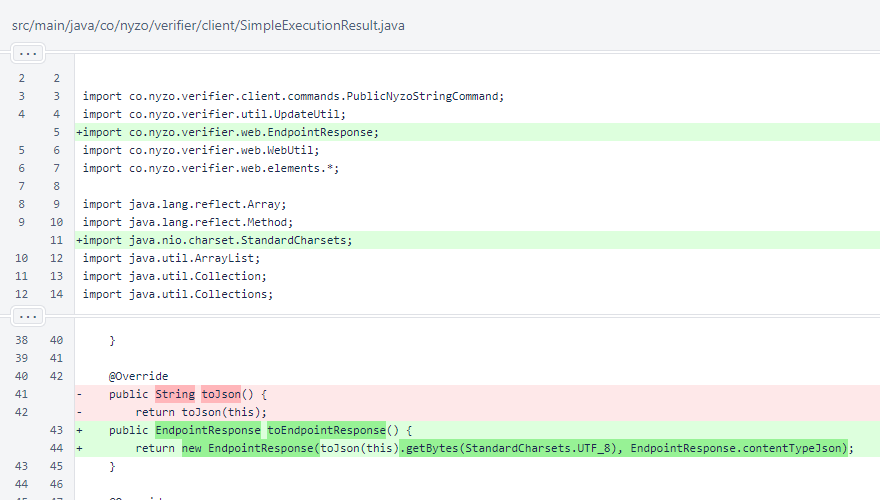The new CoinsInCirculationCommand implements the required methods for the Command interface. This command takes no arguments, and it requires neither validation nor confirmation. It is not long-running.
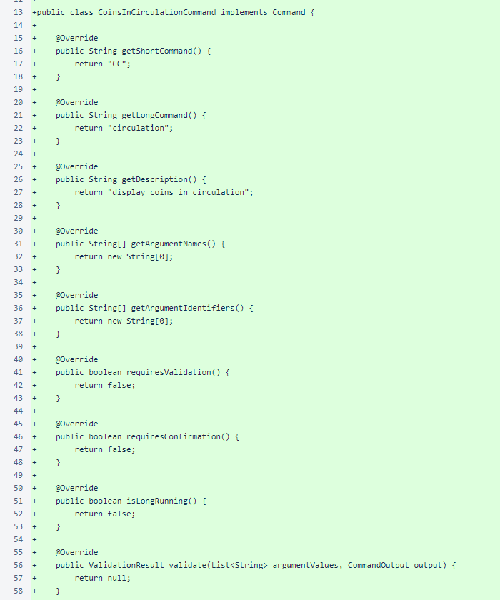CoinsInCirculationCommand.run() begins by creating the structure for its output. A CommandTable stores the calculation of coins in circulation along with a number of values used in the calculation.
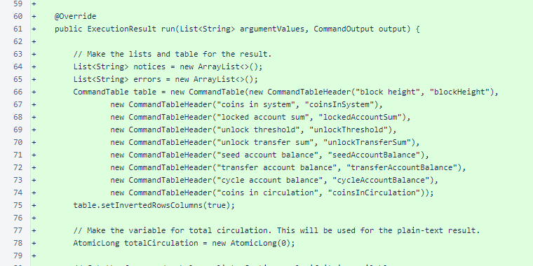The frozen-edge balance list is used to calculate circulation. The sum of locked accounts is calculated, and balances of other accounts not in circulation are retrieved. The total circulation is calculated by subtracting total locked amounts from the total number of coins in the system. An additive calculation of all unlocked amounts would produce the same result.
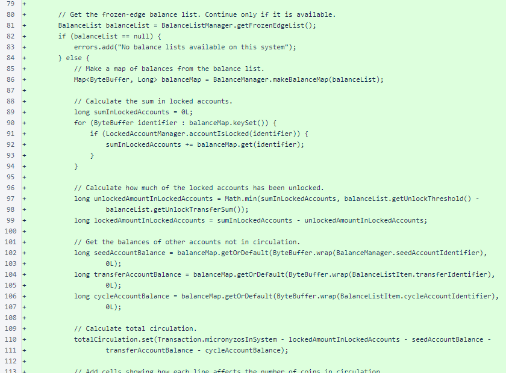The result table is assembled, and the result is produced. Instead of using the default JSON API response provided by SimpleExecutionResult, the toEndpointResponse() method is overridden to produce a plain-text response with just the circulation value.
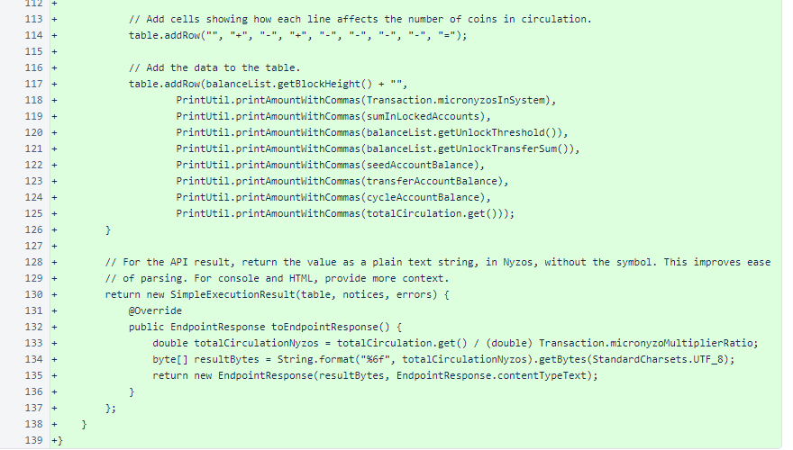In EndpointResponse, a content type was added for plain text.
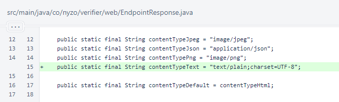The web form of this command, http://client.nyzo.co/circulation, displays a table.
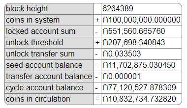The API form of this command, http://client.nyzo.co/api/circulation, returns a plain-text value. This should allow for easy implementation for anyone who wants to track Nyzo circulation.
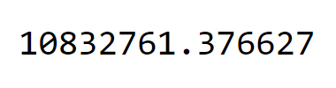